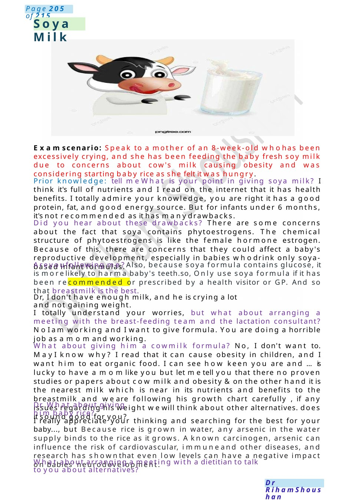
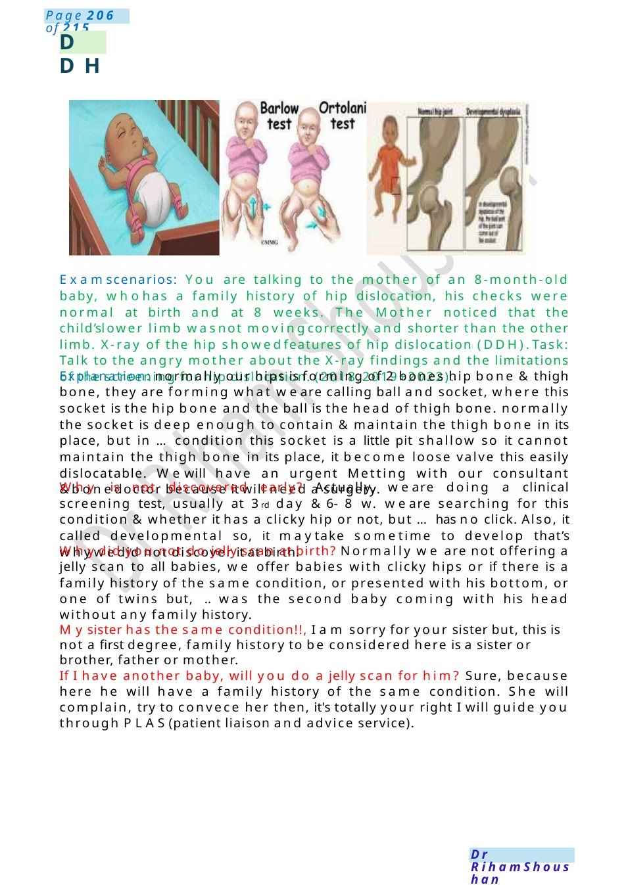

Soya Milk
Examscenario: Speak to a mother of an 8-week-old whohas been excessively crying, and she has been feeding the baby fresh soy milk due to concerns about cow's milk causing obesity and was considering starting baby rice as she felt it was hungry. Prior knowledge: tell me What is your point in giving soya milk? I think it's full of nutrients and I read on the internet that it has health benefits. I totally admire your knowledge, you are right it has a good protein, fat, and good energy source. But for infants under 6 months, it's not recommended as it has manydrawbacks.
Scenario Summary
Examscenario: Speak to a mother of an 8-week-old whohas been excessively crying, and she has been feeding the baby fresh soy milk due to concerns about cow's milk causing obesity and was considering starting baby rice as she felt it was hungry. Prior knowledge: tell me What is your point in giving soya milk? I think it's full of nutrients and I read on the internet that it has health benefits. I totally admire your knowledge, you are right it has a good protein, fat, and good energy source. But for infants under 6 months, it's not recommended as it has manydrawbacks.
Full Original Scenario

Soya Milk
Examscenario: Speak to a mother of an 8-week-old whohas been excessively crying, and she has been feeding the baby fresh soy milk due to concerns about cow's milk causing obesity and was considering starting baby rice as she felt it was hungry.
Prior knowledge: tell me What is your point in giving soya milk? I think it's full of nutrients and I read on the internet that it has health benefits. I totally admire your knowledge, you are right it has a good protein, fat, and good energy source. But for infants under 6 months, it's not recommended as it has manydrawbacks.
Did you hear about these drawbacks? There are some concerns about the fact that soya contains phytoestrogens. The chemical structure of phytoestrogens is like the female hormone estrogen. Because of this, there are concerns that they could affect a baby's reproductive development, especially in babies whodrink only soya-based infant formulas.
Areyoufollowing me?Also, because soya formula contains glucose, it is morelikely to harma baby's teeth.so, Only use soya formula if it has been recommended or prescribed by a health visitor or GP. And so that breastmilk is the best.
Dr, I don't have enough milk, and he is crying a lot and not gaining weight.
I totally understand your worries, but what about arranging a meeting with the breast-feeding team and the lactation consultant? No I am working and I want to give formula. You are doing a horrible job as a momand working.
What about giving him a cowmilk formula? No, I don't want to. MayI know why? I read that it can cause obesity in children, and I want him to eat organic food. I can see how keen you are and ...is lucky to have a momlike you but let metell you that there no proven studies or papers about cow milk and obesity &on the other hand it is the nearest milk which is near in its nutrients and benefits to the breastmilk and we are following his growth chart carefully , if any issues regarding his weight wewill think about other alternatives. does it sound good for you?
Dr. What about giving him baby rice?
I really appreciate your thinking and searching for the best for your baby..., but Because rice is grown in water, any arsenic in the water supply binds to the rice as it grows. Aknown carcinogen, arsenic can influence the risk of cardiovascular, immuneand other diseases, and research has shownthat even low levels can have a negative impact on babies' neurodevelopment.
What about arranging a meeting with a dietitian to talk to you about alternatives?

DDH
Examscenarios: You are talking to the mother of an 8-month-old baby, whohas a family history of hip dislocation, his checks were normal at birth and at 8 weeks. The Mother noticed that the child’slower limb wasnot movingcorrectly and shorter than the other limb. X-ray of the hip showedfeatures of hip dislocation (DDH).Task: Talk to the angry mother about the X-ray findings and the limitations of the screening for hip dislocation. (2018,2019+2022).
Explanation: normally our hips is forming of 2 bones hip bone &thigh bone, they are forming what we are calling ball and socket, where this socket is the hip bone and the ball is the head of thigh bone. normally the socket is deep enough to contain &maintain the thigh bone in its place, but in ...condition this socket is a little pit shallow so it cannot maintain the thigh bone in its place, it become loose valve this easily dislocatable. Wewill have an urgent Metting with our consultant &bonedoctor because it will need a surgery.
Why is not discovered early? Actually, we are doing a clinical screening test, usually at 3rd day &6- 8 w. we are searching for this condition &whether it has a clicky hip or not, but ...has no click. Also, it called developmental so, it maytake sometime to develop that’s whywedid not discover it at birth.
Whydid you not do jelly scan at birth? Normally we are not offering a jelly scan to all babies, we offer babies with clicky hips or if there is a family history of the same condition, or presented with his bottom, or one of twins but, .. was the second baby coming with his head without any family history.
Mysister has the same condition!!, I am sorry for your sister but, this is not a first degree, family history to be considered here is a sister or brother, father or mother.
If I have another baby, will you do a jelly scan for him? Sure, because here he will have a family history of the same condition. She will complain, try to convece her then, it's totally your right I will guide you through PLAS(patient liaison and advice service).